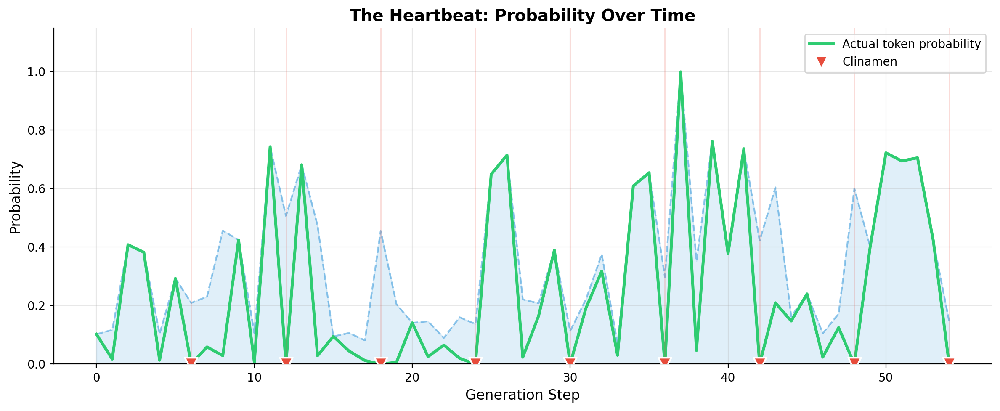
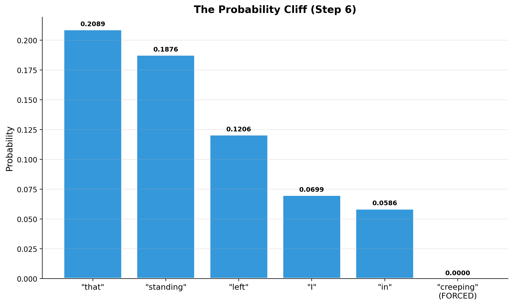
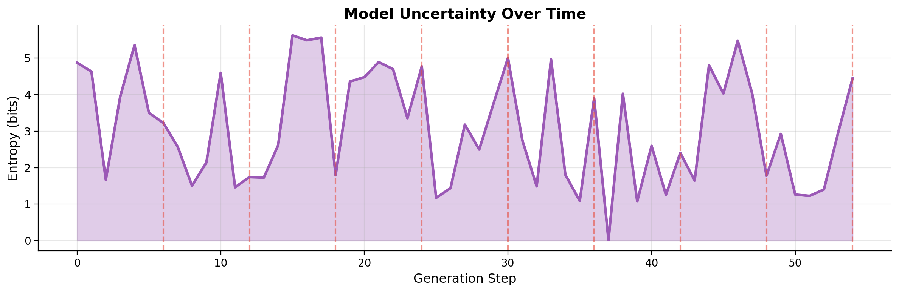

The Clinamen Algorithm: Digital Oulipo with Transformers
In Lucretius's De Rerum Natura, the clinamen is the unpredictable swerve of atoms that breaks the deterministic chain of causation. Without this swerve, atoms would fall forever in parallel lines, never colliding, never creating worlds or life or thought.
Language models have a similar problem: they follow the path of highest probability, generating text that is fluent but often predictable, a stream of statistical clichés flowing toward the most likely next word. The question that interests me is simple: what happens if we force them to swerve?
The Experiment
I built a text generator that introduces periodic "creative errors" at fixed intervals. Every six tokens, instead of sampling from the most likely candidates, the model must choose from the long tail of the distribution, the statistically unlikely but syntactically valid words that it would normally never select.
The constraint is inspired by the Oulipo, the French literary movement that explored constrained writing as a generative technique. Raymond Queneau's Cent Mille Milliards de Poèmes, Georges Perec's lipogrammatic novel La Disparition (written entirely without the letter 'e'), and other Oulipian experiments showed that arbitrary constraints don't limit creativity but can actually unlock it, forcing the writer down paths they would never have chosen freely.
The clinamen algorithm applies this principle to neural text generation. The constraint is temporal rather than lexical: not "never use the letter e" but "every sixth word must be a surprise."
An Example
Here's what the algorithm produces when given a simple literary prompt:
PROMPT:
"The old house stood at the edge of the forest, its windows"
GENERATED:
"The old house stood at the edge of the forest, its windows were dark and the only thing creeping out from the woods was cinnamon. A small, young Philip would be seen walking, cropping his face, and seated in the front of the picturesque room."
The red words are the clinamen moments, where the algorithm forced the model off its expected path. Notice how the model wanted to say "a small, young man" but was forced to say "Philip" instead, or how it expected to continue with "the only thing that" but we inserted "creeping," which then cascades into the bizarre image of cinnamon creeping out of the woods.
What interests me is how the model adapts. It doesn't break. The phrase "the only thing creeping out from the woods was cinnamon" is grammatically correct and even evocative, despite being semantically strange. The model finds a way to make the forced word fit, and in doing so produces something no one would have written deliberately.
The Visualizations
The first visualization shows the probability of chosen tokens over time.

The green line shows the probability of each token we actually chose. During normal generation, it stays relatively high, hovering around 0.1 to 0.3, meaning the model is choosing common, expected words. But at each clinamen moment (marked with red triangles), the probability plummets, sometimes by two orders of magnitude. These are the swerves, the moments where we force the model to say something it considers improbable.
The second visualization zooms in on a single clinamen moment:

This bar chart shows the top five words the model wanted to say (in blue) versus the word we forced (in red). The visual cliff between them is dramatic: the model assigned perhaps 15% probability to its preferred word, but only 0.01% to our choice. We're forcing the model to leap off a statistical cliff.
The third visualization tracks entropy, a measure of the model's uncertainty:

Entropy measures how "spread out" the model's probability distribution is. High entropy means many words seem plausible; low entropy means one word dominates. The red dashed lines mark clinamen moments. Notice how entropy sometimes spikes after a forced choice, as if the model becomes temporarily more uncertain while processing the surprise.
Try It Yourself
The full implementation is available as a Jupyter notebook that runs in Google Colab (no installation required):
The notebook includes the complete ClinamenGenerator class, visualization tools, and a technical addendum explaining the mathematics behind softmax temperature, entropy, and attention mechanisms.
Technical Notes
For readers interested in the implementation details, the notebook's technical addendum covers:
- Softmax temperature as a "thermostat of randomness" that controls how peaked or flat the probability distribution is
- Logits as the raw scores before normalization, like a judge's notes before converting to percentages
- Entropy as a measure of uncertainty, how "confused" the model is at each step
- Attention and why the model can rationalize surprises instead of breaking down
The code uses distilgpt2 for efficiency and runs comfortably on CPU, so you don't need a GPU to experiment with it.
Why This Matters
I'm not claiming this produces great literature, it doesn't, at least not reliably. But it does produce something interesting: a window into how statistical language models understand (or fail to understand) creativity, constraint, and surprise.
The Oulipo believed that constraints liberate rather than restrict, that the arbitrary rule forces the writer to discover possibilities they would otherwise overlook. The clinamen algorithm tests whether this principle applies to machines, whether a language model, forced off its comfortable path, can find something it wouldn't have found otherwise.
Sometimes it does. And that's worth exploring.
References
- Lucretius, De Rerum Natura, c. 50 BCE
- Raymond Queneau, Cent Mille Milliards de Poèmes, 1961
- Georges Perec, La Disparition, 1969
- Vaswani et al., "Attention Is All You Need," NeurIPS 2017
- Holtzman et al., "The Curious Case of Neural Text Degeneration," ICLR 2020